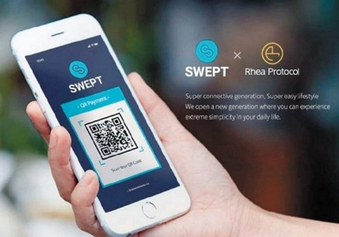
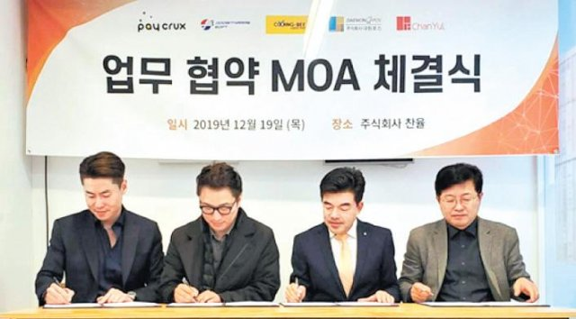
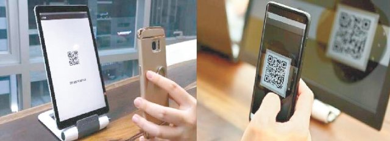
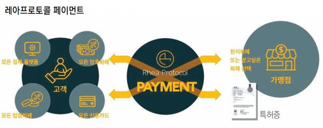
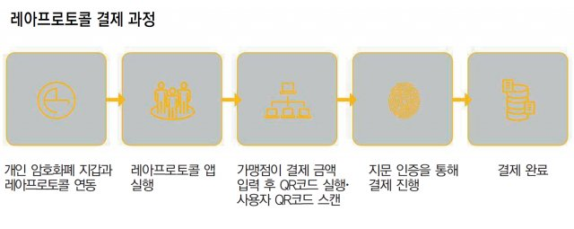

|
QR코드 접목 결제-송금 가능… 암호화폐 ‘실물거래 시대’ 성큼 2020. 04. 01 |
|---|
|
 SWEPT(스웹트)는 암호화폐의 실물 활용성에 주목하고 나온 서비스로서 신속성과 보안 기능으로도 호평을 받고 있다. - 강소기업이 미래다 - 레아프로토콜- 양방향 QR 전송 시스템 활용 결제체계 구축 - 전 세계 거래소 지원… 일반 가맹점서도 활용 레아프로토콜(RheaProtocol)은 최근 암호화폐의 실물경제 활용 가능성을 높여나가면서 주목받는 핀테크 전문기업이다. 중국 광차이그룹, 후오비인도네시아, 유닥스, 블록글로벌 등의 회사가 한국의 두빛나래소프트의 특허 기술을 활용하는 방식으로 글로벌 협력 체계를 구축해 최근 업계에서 큰 화제를 불러 모았다. 한동안 침체에 빠져 있던 관련 업계가 오랜만에 국내에서 본격화하는 대형 프로젝트인 레아프로토콜에 주목하는 이유가 있다. 올해 사업과 서비스를 본격화하는 레아프로토콜은 자본력과 기술력, 영향력 네트워크를 극대화할 수 있는 방향으로 사전에 비즈니스 모델 및 서비스 설계를 사전에 마무리했기 때문이다. 레아프로토콜은 암호화폐를 실물경제에서도 쓸 수 있도록 한다는 게 목표다. 양방향 QR코드 전송 시스템을 통해 가맹점 혹은 결제를 원하는 매장에서 사용자가 다양한 암호화폐 중 하나를 선택해 결제를 할 수 있게 해주는 플랫폼이다. 기존 QR코드 결제를 지원하는 모든 결제플랫폼인 포스(POS), 키오스크를 통해 결제 서비스를 지원한다. 기존 결제 시스템에서도 쓸 수 있다는 점 때문에 확장 가능성이 특히 높게 점쳐진다. ■ 글로벌 네트워크 발판 마련… 성장 가능성 높여 그동안 블록체인 업계에서는 서비스 내놓기에 급급해 정작 출시 후 기술이 부족하거나 성장 전략 등이 없어 시장 공개 이후 바로 추락하는 서비스가 적지 않았다. 레아프로토콜은 이와 차별화할 수 있는 프로젝트로 여겨진다. 기술적으론 양방향 QR코드 전송 시스템과 글로벌 거래소간 결제시스템인 ‘SWEPT(스웹트)’를 이용하는 방식으로 블록체인의 실물 경제 활용 가능성을 높였다. 여기에 중국 주요 국영 금융투자회사인 광차이그룹과 손을 잡으면서 글로벌 네트워크 활용 폭을 넓혔다. 이러한 글로벌 네트워크가 강점을 가지는 이유가 있다. 암호화폐가 출시된 이후에 부랴부랴 입점을 논의하는 여느 업체들과 달리 레아프로토콜은 글로벌 암호화폐 거래소가 사전에 참여하면서 확장 기반을 닦았다는 점이다. 광차이그룹 잭 렌 부대표는 “블록체인 전망이 밝은 가운데 한국 거래소들의 거래 문의가 이어지고 있다”며 “특히 블록체인은 다른 비즈니스와 결합 가능성이 높아 아시아 시장의 신흥 시작은 잠재력이 무한하다” 고 설명했다. 레아프로토콜과 제휴 체제를 갖춘 후오비인도네시아를 비롯해 글로벌 거래소 네트워크의 역량을 통해서 시너지 효과를 낸다는 구상이다. 글로벌 거래소가 레아프로토콜과 SWEPT 서비스에 특히 관심을 기울이는 건 무엇보다 기술력 때문이다. SWEPT는 암호화폐의 실물 활용성에 주목하고 나온 서비스인 만큼 신속성이 강화된 서비스지만 보안 기능으로도 호평을 받았다. 올해 상반기 암호화폐 지갑이자 결제 시스템이 담긴 크립토뱅크 서비스를 예고한 가운데 레아프로토콜이 블록체인 결제 생태계 구축에도 속도를 내고 있다. 현재 주요 거래소들과는 암호화폐 결제 지원 등을 놓고 막바지 협의에 들어간 것으로 알려졌다. 빠르게 성장할 수 있는 기반을 닦아 놓은 뒤 사업을 시작하는 셈이다. ■ 국내 4차 산업혁명 기술 전문기업 참여… 결제 기술 기반 사업 이러한 암호화폐 결제 서비스를 이루는 근간은 국내 업체의 기술을 통해 만들어졌다. 바로 순수 국내 기술업체인 두빛나래소프트의 양방향 QR코드 전송 및 결제 기술이다. 두빛나래소프트는 2014년 인공지능(AI) 분야 소프트웨어 개발로 사업을 시작했을 만큼 4차 산업혁명의 미래에 대한 밑그림을 가지고 사업을 이어온 업체다. 2018년 스마트폰과 신용카드를 연계한 결제 소프트웨어를 개발하면서 결제 사업 분야로 보폭을 넓혔다. 중국 광차이 그룹이 특히 관심을 가진 건 두빛나래소프트가 가진 QR코드 등을 이용한 정보송수신 특허였다. 두빛나래소프트의 QR 특허 기술은 근거리 송수신 시스템으로 기존 보안 취약 문제를 해결하면서 결제 활용을 가능케 했다. 판매자와 구매자 모두 실시간으로 생성되는 QR코드를 통해서 결제하는 시스템은 탈중앙화를 목표로 하는 암호화폐 시장에서 특히 관심을 가질 만한 기술이다. 2018년 출원한 특허 ‘QR코드를 이용한 정보 송수신 방법 및 시스템’ 외 7개 원천 특허를 보유하고 있으며 3월 23일 기술보증기금에서 특허평가 A등급을 획득하기도 했다. 두빛나래소프트가 국내에서 관련 특허를 출원하고 관련 기술 고도화에 나서면서 암호화폐 공동전산망 개발을 위한 다국적 합작회사의 일원으로 당당히 이름을 올릴 수 있었다. 두빛나래소프트가 가진 암호화폐 크립토뱅크 서비스가 해당 글로벌 네트워크 결제 시스템의 핵심축이라고 해도 과언이 아니다. 올해 상반기 출시하는 크립토뱅크는 암호화폐 자산관리 서비스 외에도 QR코드 즉시 생성 기능을 통한 구매자와 판매자 양방간의 결제를 지원하는 ‘편의성’과 2중 암호화 보안 시스템의 ‘보안성’, 다양한 결제·송금 시스템에 쉽게 적용 가능한 확장성이 특징이다. 등록한 거래소의 보유자산 및 시세조회 등을 터치만으로 간편하게 할 수 있다. 이를 통해 암호화폐의 종합 플랫폼으로 활용성을 높일 것으로 기대감을 높이고 있다. 여기에 간편 송금 기능 등을 강화해 나간다는 예정이어서 복잡한 주소 때문에 사용을 꺼리던 기존 금융 이용자들의 유입을 이끌어낼 수 있을 것으로 보인다. ■ “암호화폐 실물거래 가까워진다” 최근엔 국내서도 QR코드를 통한 결제가 점차 보편화되면서 결제에 대한 인식 수준이 높아졌다. QR코드를 활용해 특정 암호화폐에 국한하지 않고 지급보증만 이뤄지면 원활한 거래가 이뤄지게 된다. SWEPT 망은 거래소 간 별도의 정산 과정을 걸쳐 사용자의 암호화폐 결제에 관해 빠른 처리를 지원한다. 거래소의 암호화폐를 기반으로 QR코드 거래를 진행하는 서비스가 바로 SWEPT의 근간이다. 암호화폐 거래시 지급가치 확인에만 수일이 걸렸던 것과 달리 실시간으로 확인이 가능해진다. 실물거래까지의 수십 개나 이어졌던 연결고리를 단순화했기 때문이다. 일반 소매 가맹점에서의 POS 기기를 이용해 QR코드를 생성한다는 장점 덕분에 새로운 기기를 개발할 필요가 없이 빠르게 가맹시장에서 영향력을 넓힐 수 있을 것으로 기대된다. SWEPT 시스템을 이용할 경우 특정 암호화폐 거래소에 국한되지 않고 암호화폐의 실물경제에 접목이 가능하다. 진정한 의미에서의 탈중앙화에도 시동이 걸린 것으로 풀이된다. 페이먼트 상용화 기술 개발은 이미 완료된 가운데 협업 과정 등에 세부 조율 과정이 이뤄지고 있다.  ㈜두빛나래소프트(레아프로토콜 모회사)는 찬율과 대원포스, 페이크럭스, 쿠잉비와 전략적 협력을 위한 협의서(MOA)를 체결했다.(왼쪽 박대용 창업자)

다양한 가맹점에서 원하는 암호화폐로 QR코드를 이용해 결제
가능하다.  |
| 출처 : 동아일보 (http://www.donga.com) |
| 기사 보러가기 → |
| 목록 |
Society for worldwide Exchange Payment and Transfer